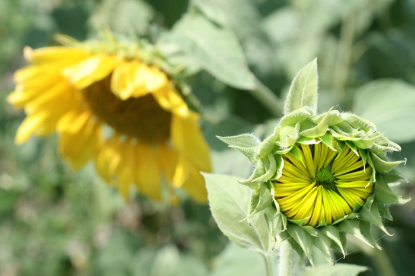

Next Photo
-
Vote
Young Sunflower
These sunflowers bring to mind this verse: 'Therefore, if anyone is in Christ, he is a new creation. The old has passed away; behold, the new has come. 2Cor. 5:17' Less on the religious implications of the verse and more on the passing of old, and budding of new. You can literally see the vibrance and new life ready to burst from their bundled cage. These two sunflowers illustrate a point of life in a very beautiful way, and there is much more you could take from this, but I will leave that thought to you. The photo features an older sunflower, just past its prime, bokeh'd into the background. It is glinting with the midday summer light, and those highlights definitely add to the uplifting feeling brought by this picture. The head of this first sunflower is bowed down, as if to allow the beauty of the youthful sunflower to show in full. The main subject of the photo is a not yet bloomed sunflower, just waiting for the right moment to bring its full sunflower beauty into the world. The green tint of its future, warm yellow petals convey youth and vitality. This can not even be contained by the sunflower as, already, one petal has sprung from its cage. Sunflowers make beautiful similes.
More...
Title: Young Sunflower
Description: These sunflowers bring to mind this verse: 'Therefore, if anyone is in Christ, he is a new creation. The old has passed away; behold, the new has come. 2Cor. 5:17' Less on the religious implications of the verse and more on the passing of old, and budding of new. You can literally see the vibrance and new life ready to burst from their bundled cage. These two sunflowers illustrate a point of life in a very beautiful way, and there is much more you could take from this, but I will leave that thought to you. The photo features an older sunflower, just past its prime, bokeh'd into the background. It is glinting with the midday summer light, and those highlights definitely add to the uplifting feeling brought by this picture. The head of this first sunflower is bowed down, as if to allow the beauty of the youthful sunflower to show in full. The main subject of the photo is a not yet bloomed sunflower, just waiting for the right moment to bring its full sunflower beauty into the world. The green tint of its future, warm yellow petals convey youth and vitality. This can not even be contained by the sunflower as, already, one petal has sprung from its cage. Sunflowers make beautiful similes.
Keywords: cycle life death sunflower sun flower yellow baby
Hidden: n
Date added: Sat Aug 25 10:34:12 CDT 2007
Date taken: Tue Aug 14 23:43:35 CDT 2007
Camera: Canon EOS DIGITAL REBEL XT.
Resolution: 3222x2146
Mode: 0
Shutter speed: 566484/65536
Flash: 16
Exposure time: 1/400
Iso: 400
Metering: 5
Aperture: 435412/65536
Focal length: 70/1
Artist: NathanielGuy Mahieu
Copyright: 2007 NathanielGuy Mahieu
Views: 455